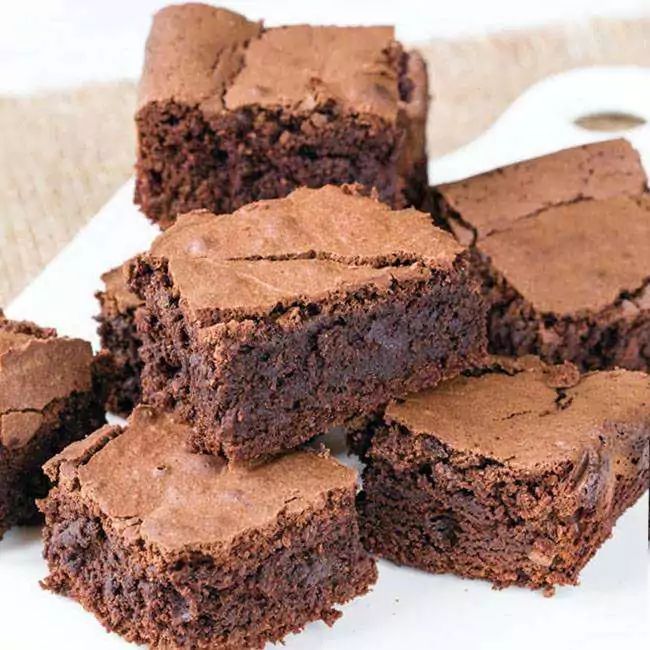

Brownie

Ingredientes
-5 colheres de manteiga
-3 xícaras de achocolatado
-12 colheres de farinha de trigo
-3 ovos
-6 colheres de açúcar
Modo de preparo
1-Derreta a manteiga e reserve
2-Enquanto derrete a manteiga, misture os 3 ovos e a açúcar e misture bem
3-Acrescente a manteiga derretida no ovo e o açúcar
4-Agora é so misturar o achocolatado e o trigo
5-Unte uma forma com manteiga e achocolatado
6-Leve ao forno a 180° C por 30 minutos
 Receitas
Receitas